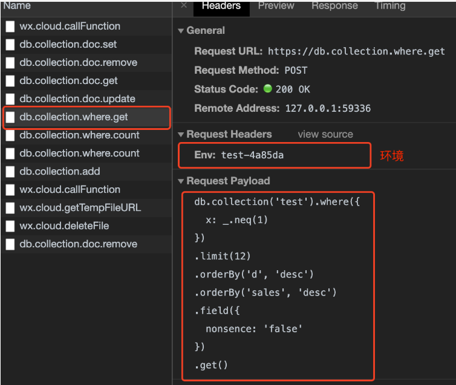

在此提供云开发的一些重要概念解释，掌握这些概念对理解云开发和其开发模式非常重要：
环境
配额
资源环境
一个环境对应一整套独立的云开发资源，包括数据库、存储空间、云函数等资源。各个环境是相互独立的，用户开通云开发后即创建了一个环境，默认可拥有最多两个环境。在实际开发中，建议每一个正式环境都搭配一个测试环境，所有功能先在测试环境测试完毕后再上到正式环境。以初始可创建的两个环境为例，建议一个创建为 test 测试环境，一个创建为 release 正式环境。
为了方便开发者调试，从开发者工具 1.02.1905302 及基础库 2.7.1 起，在 wx.cloud.init 后会在调试器中输出 SDK 中所使用的默认环境：
devtools-network-cloud-init
同时，在 Network 面板中会输出各个云开发操作的请求详情，其中包括该调用所请求的环境 ID：
